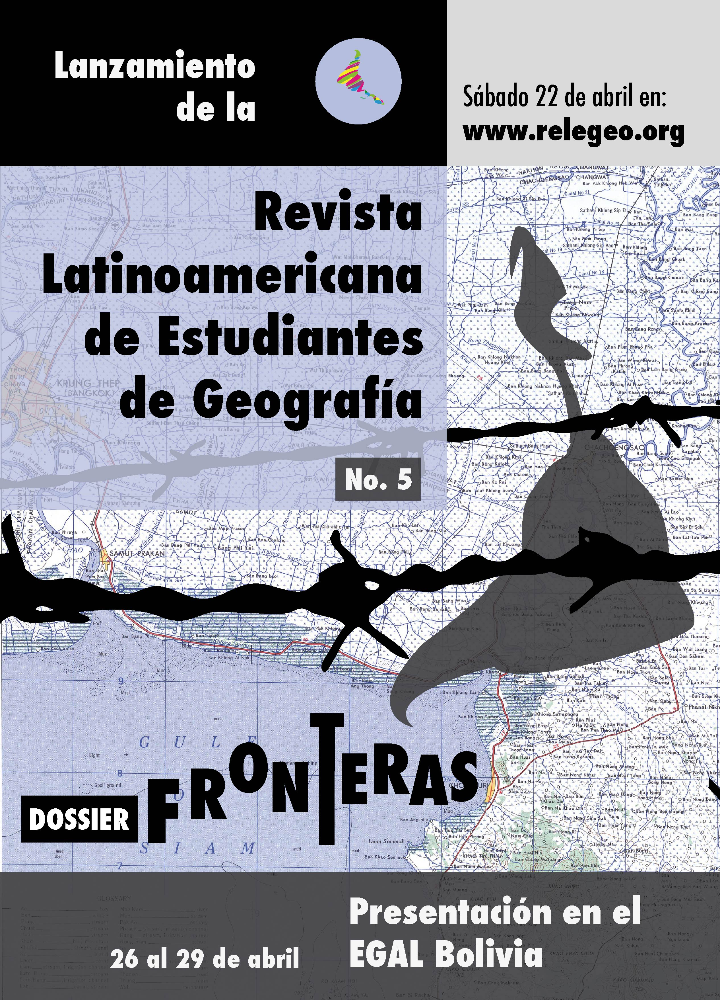

Apresentação
Número atual
Número atual
Chamadas
Comitê Editorial
Regras editoriais
História e estatísticas
Apresentações
Contato
Español
RELEG: Revista Latinoamericana de Estudantes de Geografia
Apresentações
Pôsteres

Vídeos
Nº 2 lançamento, 2011:
Convocatoria para el No. 6, 2018: